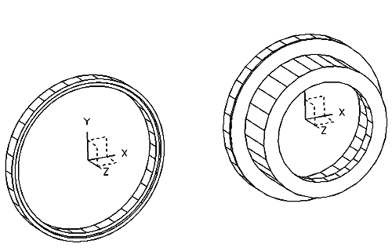
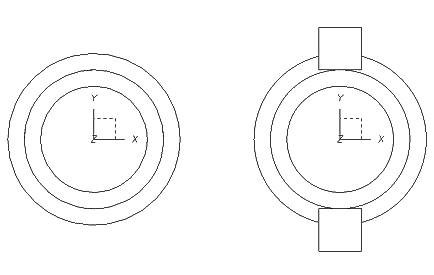
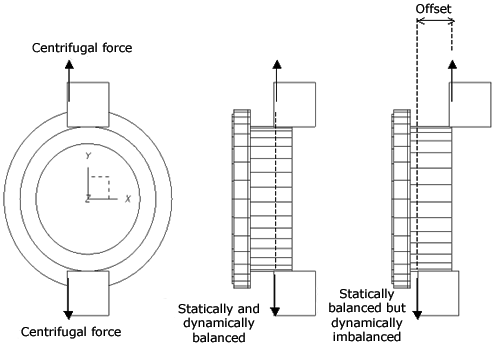
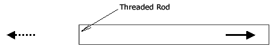
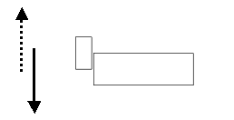
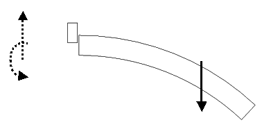
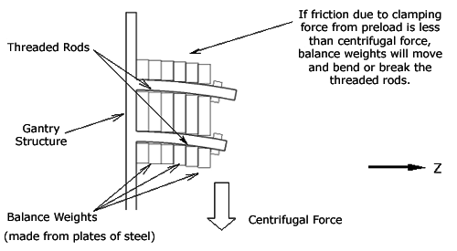
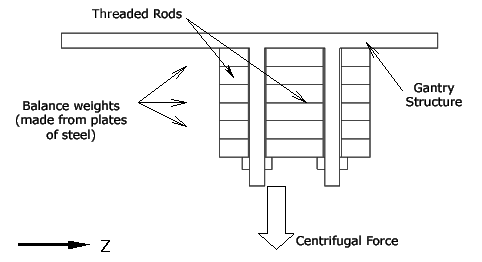

Operating Documentation
Direction 5193575-800, Rev# 5
LightSpeed 7.X Service Information - Adv
Operating Documentation |
Gantry service balance is achieved by use of a service GUI tool, accessed from the common service desktop. The GUI steps through the process, providing all necessary instructions to the user.
| NOTE: | GANTRY BALANCE MUST BE CHECKED FOR ANY COMPONENTS REPLACED ON OR REMOVED FROM THE ROTATING ASSEMBLY. |
Why is balance necessary?
Having a non-symmetric weight load rotating causes gantry structural stress.
When to perform the balance procedure?
After every rotating gantry part replacement. Even tube alignments and power supply replacement will cause a change in the gantry balance condition.
There are two separate types of imbalance that may occur. The first is referred to as the static imbalance. The second is referred to as the dynamic imbalance.
A gantry is statically balanced when the center of mass (sometimes referred to as center of gravity) of the rotating assembly is on the axis of the bearing. When a gantry is statically imbalanced it will force the entire system to oscillate back and forth in the X direction with one oscillation per revolution of the rotating assembly. It will also oscillate up and down in the Y direction with one oscillation per revolution of the rotating assembly.
A system is statically balanced by adding weight to the rotating assembly, 180 degrees away from the “heavy side” or somehow removing weight from the “heavy side”.
A gantry is dynamically balanced when the mass distribution is symmetric about an XZ plane passing through the center of mass as well as being symmetric about an YZ plane passing through the center of mass. Illustration 1 and Illustration 2 may make this clear.
Taking a simple example, the left side of Illustration 1 shows a statically balanced bearing. The right side of Illustration 1 shows where we have added a rotating structure to the bearing that is also statically balanced. We do not show the stationary structure that supports the bearing, but assume that it is in place. This assembly is also dynamically balanced due to the symmetry.
Illustration 1: Balanced Bearing and Structure

The left side of Illustration 2 shows a view down the Z axis of this example. Now, we add two identical components to the structure, which are 180 degrees apart, as shown on the right side of Illustration 2. This is statically balanced since the center of mass is on the bearing axis. But it is not clear whether it is dynamically balanced.
Illustration 2: Static Balance

A side view illustrates this point. The middle sketch of Illustration 3 shows a dynamically balanced situation since the two identical components are directly across from each other (have the same Z coordinate). The right side of Illustration 3 shows a dynamically imbalanced situation. Here, the gantry tends to wobble as it is rotated. The Pre-LightSpeed gantries were not dynamically balanced and the wobble was often visually apparent.
Illustration 3: Dynamic Imbalance Shown on Right Hand Side

Two strain sensors have been added to the stationary gantry frame located below the MSUB and TGP boards. One sensor is located on the front face of the gantry frame and another on the inside face of the gantry frame. Both sensors are connected to an interface board that is then connected to the MSUB. Due to the low level of signals involved, both the sensors are sensitive to induced noise from air blown across them. It is very important that the sensor assembly covers remain on both the sensor mount assemblies during the gantry balance program execution.
From the combination of both the sensor inputs for the strains placed on the gantry stationary frame during rotation, the gantry balance program can calculate the imbalance forces and moments that need to be counteracted to balance the gantry. These counteracting forces and moments are then produced by putting the prescribed weights at the prescribed Z locations at the two balance sites (107 and 180 degrees). The imbalance forces and moments are determined through a two-plane balance procedure described in many undergraduate dynamics texts. By observing the change in strain on the two sensors to the addition of trial weights at two offset planes, a relation between strain and imbalance can be determined. This relation is referred to as the sensitivity matrix.
This gantry specific relation can be reused later, even after rotating components have been changed. It can be used to simply verify that imbalance is within specification or if necessary to determine the new configuration of the two balance sites needed to counteract the imbalance forces and moments. Without the sensitivity matrix file the software does not know the relationship of sensor readings to balance condition. A balance check is not possible prior to generating the sensitivity matrix.
The gantry service balance procedure consists of six steps as described below:
Balance check (Evaluate current gantry balance state).
Verify the current weight configuration.
Install the reference weights and collect the data to generate sensitivity matrix (if it does not exist).
Generate the balance solution.
Install the weights.
Verify the balance and save the new configuration.
The gantry balance routine may fail to balance the gantry if the procedure is not followed properly. Examples of issues that will cause the gantry balance routing to fail are:
Sensor data validity (sensor data is tested to validate that it falls within the expected ranges by the balance program).
Incorrect reference weight placement.
Incorrect torque of trim weight fasteners.
Gantry damage can occur if proper procedures are not followed. Examples of problems that fall in this category are:
Incorrect installation of weights.
Using threaded rods to manually rotate the gantry.
Incorrect torque of trim weight fasteners.
The proper torque on the gantry weight nuts is critical due to the forces exerted on the weights during rotation.
For a 0.4 second scan, the load capacity of the threaded rods needs to be:
@107 degree location at least 18000 lbs (8165 kg).
@180 degree location at least 7000 lbs (3175 kg).
To be certain that friction carries the centrifugal force of the balance weights instead of the threaded rods. The next section will help us to understand the kinds of loads that can be carried by the rods and will then explain the importance of preload and friction.
In the following illustrations, the applied load is drawn as a solid-line arrow and the reaction load is drawn as a dotted-line arrow. The reaction load is the load that opposes the applied load.
Tensile load is the direction of the preload in the rods when they are tightened. See Illustration 4.
Illustration 4: Tensile Load

In Illustration 5, note that the applied shear load and the reaction load, which act across the threaded rods, are close together. For a given cross-sectional area, threaded rods are only half as strong for a shear load as compared to a tensile load. The offset shown indicates the failure mode.
Illustration 5: Shear Load

In Illustration 6, the applied shear load and the reaction are far apart. The threaded rods are considerably weaker in this case compared to a shear load alone. How much weaker depends on the offset distance (i.e. moment arm) between the applied load and the reaction.
Illustration 6: Combined Shear and Bending Load

The threaded rods in the 107 degree and 180 degree balance stacks would be loaded in combined shear and bending, if the preload in the rods were small. This is shown in Illustration 7. As stated above, threaded rods are weak in combined shear and bending. In fact, the threaded rods cannot carry the loads from the balance weights directly. They will eventually fracture under the load.
Illustration 7: Combined Shear and Bending Load

However, we have intentionally specified a high preload for the threaded rods so that friction between the weights will carry the centrifugal force. This drastically reduces the shear and bending load directly on the rods. But again, the preload needs to be high, but not too high as this will fracture the rods in tension. A torque of 160 N-m (118 ft-lb) is the optimal value to achieve the desired results.
Why were the threaded rods oriented in this way? The Z adjustment of the center of mass is needed for achieving dynamic balance. This means the axis of the threaded rods needed to be along the Z direction so that the center of mass of the balance weights can be shifted forwards or backwards in the Z direction. This adjustment is made possible by placing aluminum spacers and shims, which have little mass, between the gantry structure and the steel balance weights. More or less aluminum spacers and shims can be used to shift the weight of the heavy steel plates as needed. And as before, friction between all the elements carries the centrifugal force when the preload is as specified.
Had there not been a requirement to be able to adjust the center of mass in the Z direction, we could have used a more conventional loading on the threaded rods. This is shown in Illustration 8 where it can be seen that the threaded rods would have had only tensile loading. A frictional load between the balance weights would not be as critical. In fact, the threaded rods could have been smaller in size and would have still safely carried the centrifugal force.
Illustration 8: Tensile Load Only

There are different Gantry balance specification levels that are used depending on whether you are balancing the gantry or just checking the current balance status during Fastcal or Detailed Cal.
When performing the gantry balance process, the results are checked against a very tight factory specification and a lesser field specification. Systems in the field are allowed a less stringent specification than the tightly controlled manufacturing environment. Both specifications are considered “balanced” with regards to the system needs for scanning at a customer site. Manufacturing has the ability to use this same program so the extra manufacturing (or Factory) specification is displayed along with the Field specification. The system is calibrated to the manufacturing specification prior to shipment such that any changes during installation should not require a gantry rebalance.
There is a guard band outside of the Field specification that is called the “IQ” specification. This is the range that defines a “marginal” balance condition as shown in the service desktop. Image artifacts will occur if the balance condition exceeds the “IQ” range. In a marginal condition, a Fastcal is still allowed to run so the customer is not restricted from scanning. This guard band also accounts for any minor variations in balance results in the case of the gantry balance being at the upper field limit for one pass and just over the limit for a subsequent check. A marginal condition does indicate to the Service Engineer that gantry rebalance will need to be performed prior to running the next Detailed Cal or at the next opportunity. A Detailed Cal is not allowed to run in a marginal balance condition.
There are many files used by the gantry balance software. Some of these can be used to look at the past history of gantry balance iterations. All of the files listed here may be viewed from a C-shell using the Unix “more” function as they are all text files. The history of the gantry balance tool is recorded in following files:
/usr/g/service/state/ssw.sysBalanceMon.hist
/usr/g/service/state/ssw.srvGanBalance.hist
/usr/g/service/state/balNum
/usr/g/service/state/ssw.diagSession.hist
/usr/g/fw/balresults.dat
The following files are saved/restored across software loads.
ssw.sysBalanceMon.hist
One of the following messages is recorded at the end of balance verification of Gantry Balance Tool, Detailed Cal and Fast Cal.
GANTRY: BALANCED TO FACTORY SPEC.
GANTRY: BALANCED TO FIELD SPEC.
GANTRY: NOT BALANCED.
SYSTEM EXCEPTION ISSUE DETECTED.is recorded in case that static and dynamic imbalance cannot be acquired.
ssw.srvGanBalance.hist
To track Gantry Balance Tool history, historical log is recorded.
balNum
The values of static and dynamic imbalance are recorded. This is used in case that balance status is displayed on home page of CSD. This file is created or updated after static and dynamic imbalance are calculated.
ssw.diagSession.hist
All the messages, which are displayed in Result and Status screen are recorded in this file.
balresults.dat
Detail calculation history is written in this file. Calculation results and weight configurations are included.
| DO NOT ATTEMPT TO MANUALLY EDIT THE FOLLOWING FILES. | |
The following data files are saved/restored across software loads and are found in /usr/g/fw.
Sensitivity matrix data file: sensmatrix.dat (Text file)
On the first line contains the Z location of the A- and B-planes used during the trial runs. The rest of the file contains a matrix, which relates strain to imbalance. Each term in the matrix is defined with a magnitude and phase angle. This can be saved in "State to update data" (and any previous contents are overwritten). It can also read in at the beginning of a balance process to eliminate the two trial runs. It assumes the gantry has not changed dynamic characteristics since the matrix was saved for this particular and unique gantry.
Weight configuration: balconfig.dat (Text file)
Contains two lines describing the configuration of the two stacks starting from the back. First line is the configuration for 107 degree and second is the one for 180 degree. Each line should contain seven space-delimited integers.